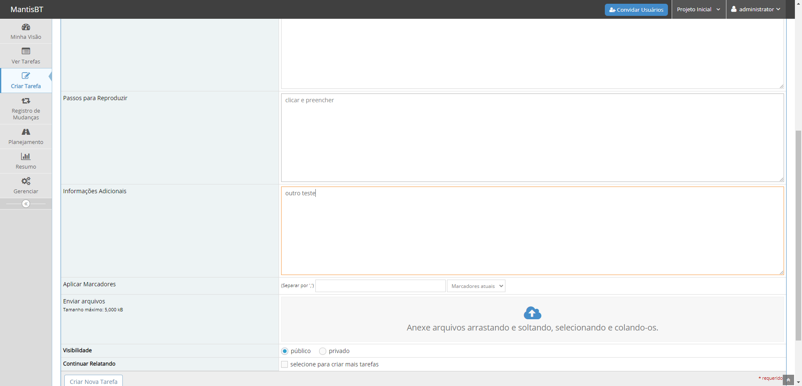
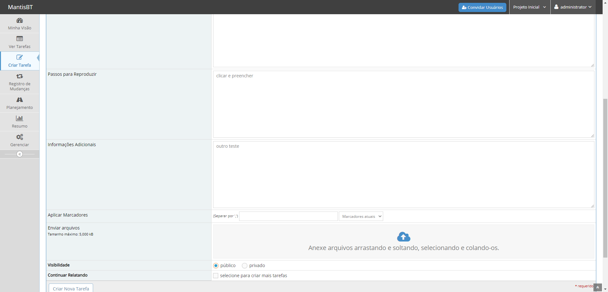
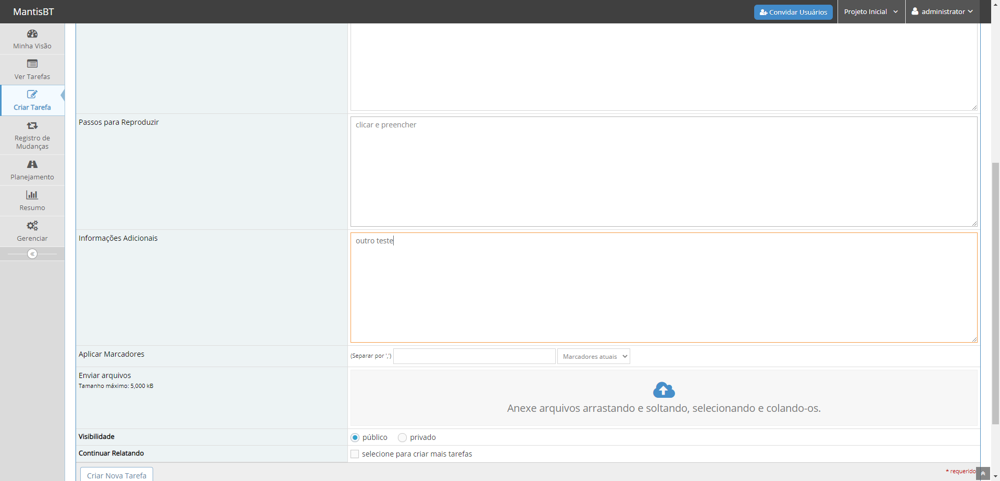
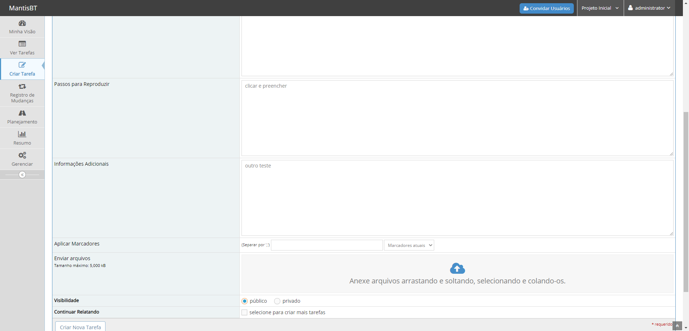
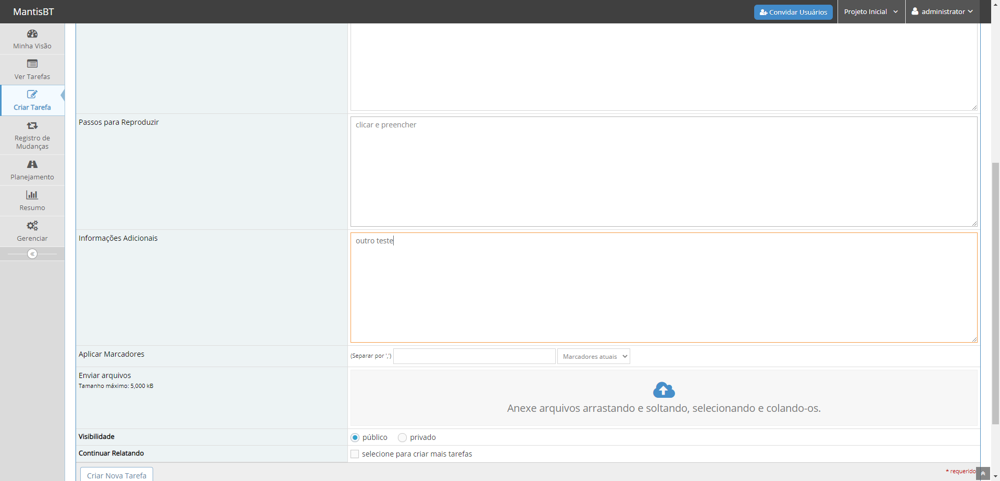
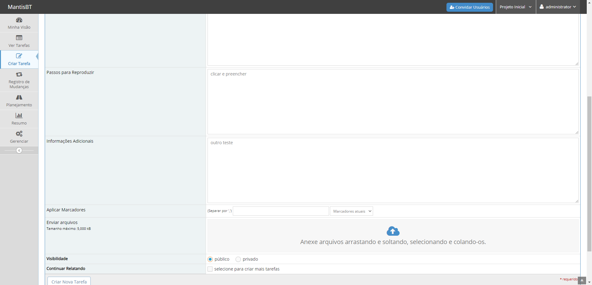

Serenity BDD Template
Home
>
Criar Nova Tarefa
>
adicionar relacionamento entre tarefas
> Screenshots
Overall Test Results
Requirements
Features
Report generated 23-01-2021 18:55
Criar Nova Tarefa
Feature
Background: acessar criação de tarefas
adicionar relacionamento entre tarefas
 


 


